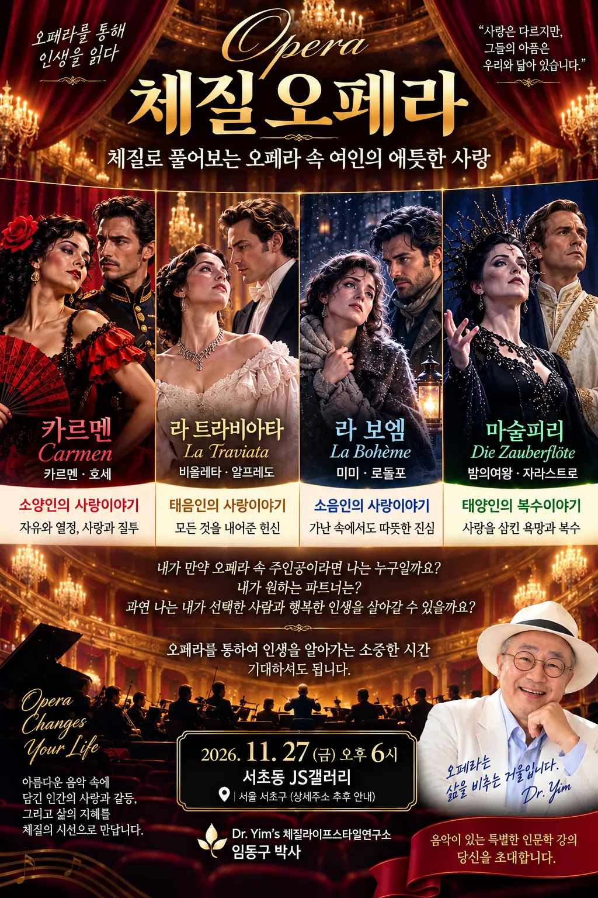
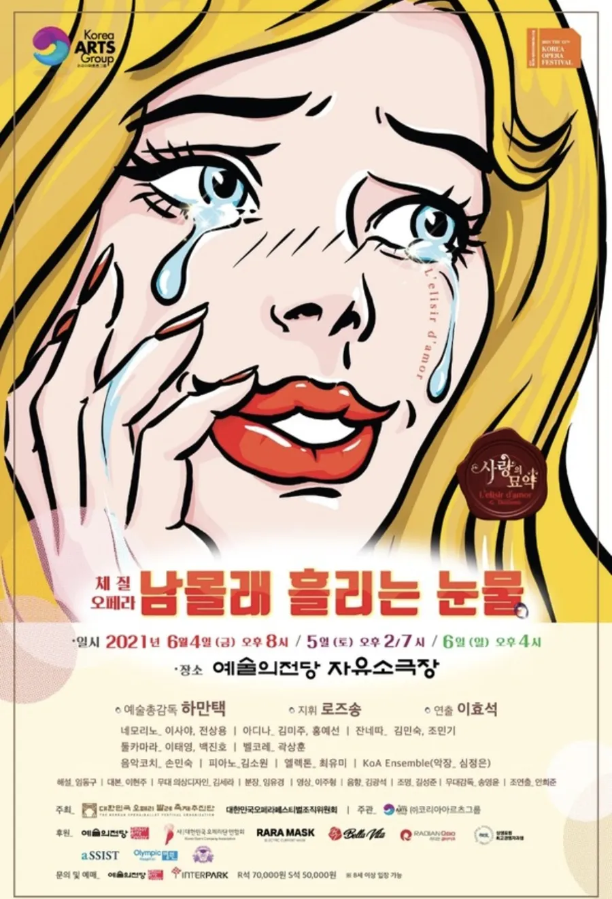
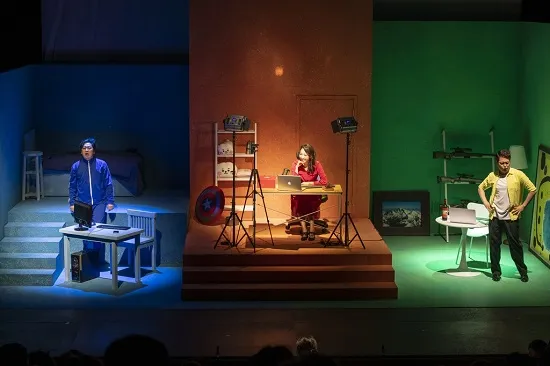

체질로 풀어보는 오페라 속 여인의 애틋한 사랑
2016년부터 기업·기관 강연으로 다듬어 온 체질오페라 강의안을, 박사님이 직접 만드신 2026 포스터의 무드와 새 인사말에 맞춰 다시 짭니다. 같은 원재료로 쓰임새가 다른 세 가지 안을 준비했습니다.

박사님이 “이 느낌으로 갈꺼야”라고 하신 인사말을 세 안 모두의 첫 슬라이드로 고정합니다. 강의 전체의 약속이 이 한 장에 담깁니다.

공모전 당선작으로 예술의전당 무대에 오른 「남몰래 흐르는 눈물」(원작: 도니제티 「사랑의 묘약」) 포스터와 무대 사진을 인사말 바로 다음 장에 둡니다. “이 강의는 실제 무대에서 검증된 작품”이라는 신뢰가 첫 5분 안에 생깁니다.

무대는 체질별 색 조명(파랑·주황·초록)으로 나뉘어 있습니다. 강의안의 체질 색 체계도 이 무대에서 가져옵니다.
원재료는 모두 박사님 폴더의 기존 강의안입니다. 무엇을 남기고 무엇을 새로 올리는지가 안마다 다릅니다.
기준 파일: 체질오페라올드버전.ppt(18장) — 박사님이 “올드버전이 있네, 거기에 마술피리만” 하신 그 파일. 세 여인의 인물 카드 구조를 그대로 살리고, 네 번째 막으로 마술피리를 올립니다.
박사님 인사말 한 장 → 2021 공연 포스터·무대 사진 → “당신은 누구와 사랑하고 싶으신가요?” 질문을 던지고 시작.
2026 포스터 네 칸을 그대로 한 장으로. 체질 색(소양 파랑·태음 금·소음 빨강·태양 초록)을 이 장에서 각인시키고 끝까지 같은 색으로 갑니다. 사상체질 기본(장부 대소, 4체질 비율)은 2장 이내로 압축.
인물 카드: 까르멘·돈 호세(둘 다 소양인, 올드버전 15·17장). 아리아: 하바네라 / 투우사의 노래. 해설 포인트: 열정이 빠른 만큼 식는 것도 빠른 소양인의 사랑, 질투가 비극이 되는 순간.
인물 카드: 비올레타·알프레도(둘 다 태음인, 5·7장), 아버지 제르몽. 아리아: 축배의 노래 / 프로방스의 바다와 대지 / Parigi, o cara. 해설: 모든 것을 내어주는 헌신, 체면과 배려 사이.
인물 카드: 미미·로돌포(둘 다 소음인, 10·12장). 아리아: 그대의 찬 손 / 내 이름은 미미. 해설: 표현은 서툴지만 따뜻한 진심, 손발이 찬 소음인의 몸과 마음.
인물 카드 신규: 밤의 여왕·자라스트로(둘 다 태양인). 영상: 박사님이 지정한 Royal Opera ‘밤의 여왕 아리아’(아래 마술피리 참고). 해설: 1%의 태양인, 완벽함과 판단력이 사랑을 삼킬 때.
여덟 인물 컷을 한 장에 펼치고 관객이 “나”와 “파트너”를 고릅니다. 올드버전 마지막 장(6인 인연판)을 8인으로 키운 것. 손 들기 또는 QR 투표로 진행(아래 시연).
네 오페라는 모두 죽음으로 끝납니다. 체질별 소통 노하우(논리적 설득·인정과 칭찬·기다림과 격려·기승전결 설득)로 각 커플의 결말을 다시 써 보고, 「O sole mio」 합창으로 닫습니다.
| 항목 | 올드버전 (2018) | A안 업그레이드 |
|---|---|---|
| 구성 | 세 여인(비올레타·미미·카르멘) | 네 쌍의 연인 + 마술피리(태양인) 추가로 4체질 완성 |
| 도입 | “대한민국을 대표하는 아이콘 — 한글·한식·한국사람” | 박사님 인사말 + 공모전 당선작 증거로 시작 |
| 관객 역할 | 듣는 강의 | 주인공을 고르고 결말을 다시 쓰는 참여형 갈라쇼 |
| 인물 표현 | 외모 묘사 중심, 일부 자극적 표현(카르멘) | 체질 기질·사랑 방식 중심으로 순화, 외모는 한 줄 |
| 디자인 | 흰 바탕 사진+텍스트 | 2026 포스터의 벨벳·금빛 + 체질 색면 시스템 |
박사님이 최근 “한국형 HRD로 접근합시다”라고 하신 방향을 강의안으로 옮긴 안입니다. 기준 파일: **모비스 체질소통강연(23장), **증권 체질오페라 제안서(7장). “행복은 타고난 유전자 개발이 최선의 방법”이라는 메시지를 오페라로 체감시킵니다.
공통 인사말 뒤에 “600년 전 세종이 꿰뚫어 본 인재 배치의 기본 법칙 — 사람에게는 저마다 하나의 능력이 있다”로 HRD 문을 엽니다.
**증권 제안서의 “김부장과 A·B직원” 사례를 그대로 살립니다. “당신은 왜 그럽니까?”에서 “당신은 그렇군요”로. 이해를 위한 체질, 공감을 위한 오페라.
네 오페라를 각 1곡씩 짧게(제르몽·밤의 여왕·질다·투우사 — **모비스 4막 구성). 곡마다 “이 인물이 우리 팀에 있다면?” 카드를 띄웁니다.
박사님이 지금 배포 중인 sasang.eglslab.com/test 설문을 현장에서 QR로. 결과 분포를 즉석에서 화면에 띄워 “우리 조직의 체질 지도”를 봅니다.
체질별 소통 노하우와 기질 특이성·적합 직무 표(2023 강의안 69·70장). 사상체질과 HR(77장) — 맞춤 큐레이팅, 스트레스 조절, 회복탄력성.
“나는 누구로서, 누구와 일하고 싶은가” — 짝짓기 슬라이드를 협업 파트너 고르기로 바꿔 진행. 신입 과정이면 「O sole mio」 단체 합창으로 마무리(**모비스 피날레 재사용).
기준 파일: 2023_01_체질오페라 **지어스_3h.pptx(102장). 공연과 강의가 함께 있는 가장 완성된 판입니다. 102장을 약 60장으로 줄이고, 순서를 “감동 → 이해 → 나에게 적용”으로 다시 세웁니다.
공통 첫 장면. 기존 1~6장(표지·사진 슬라이드)은 표지 1장으로 정리.
기획의도 → 사랑의 묘약 배역별 체질 → 아리아 메들리: 축배의 노래 · 프로방스의 바다와 대지 · Parigi, o cara · 여자의 마음 · 사랑스런 이름 · 밤의 여왕(영상 교체) · 투우사의 노래 · 하바네라 · 그대의 찬 손 · 내 이름은 미미 · O sole mio · Nessun dorma. 중복된 O sole mio·미미 슬라이드(41~46장 중복) 정리.
쉬는 동안 설문을 받아 2부에서 결과 분포를 바로 활용.
유전자·재능과 노력(88개 논문 메타연구) → 사상체질학 일반 특성 → 4체질 상세(1·2형) → 소통 노하우 → 직업·음식·영양·아로마 → 사상체질과 HR → 유전자 맞춤 라이프코칭.
세 여인 + 밤의 여왕 인물 카드 → 짝짓기 슬라이드(기존 98장 “인연”을 8인 참여판으로) → 판소리식 해피엔딩 다시 쓰기.
공연정보 사이트 안내는 QR 한 장으로. 연락처 장은 박사님 연구소 정보로 교체.
| 위치 | 현재 | 제안 |
|---|---|---|
| 51·54·76장 | 로봇·기하급수 기업·글로벌 CEO 사례(2017년 무렵 자료) | 2026 AI 시대로 갱신하거나 1장으로 압축 — 오페라 강의의 흐름을 끊는 구간 |
| 61·63·65·67장 | 체질별 대표 인물(정치인·연예인 실명) | 정치인 예시는 빼고, 오페라 인물·성악가 사례로 대체 권장 |
| 69장 | 체질 비율 태양인 0.1% / 45 / 28 / 27 | 올드버전(1/50/25/24)과 수치가 다름 — 한 기준으로 통일 필요 |
| 95장 | 카르멘 외모 묘사의 자극적 표현 | “자신의 매력을 숨기지 않는 정열의 여인”으로 순화 |
| 29장 | 밤의 여왕 — 담라우 영상 | 박사님 지정 Royal Opera 영상으로 교체 |
| 41~46장 | O sole mio · 내 이름은 미미 중복 | 중복 제거 |
박사님 요청: “등장인물들의 컷도, 누구로서 누구와 사랑하고 싶으신가요. 짝짓기처럼.” 강의 현장에서는 큰 화면에 이 장면을 띄우고 관객이 손을 들거나 QR로 고릅니다. 실제 슬라이드에는 인물 컷 이미지가 들어갑니다.
① 나는 누구로서? — 한 사람을 고르세요
원작 커플은 같은 체질끼리 만났습니다 — 호세·카르멘(소양), 알프레도·비올레타(태음), 로돌포·미미(소음), 자라스트로·밤의 여왕(태양). 현장에서는 남성 배역의 체질을 먼저 맞히는 퀴즈로 열 수 있습니다.
박사님 지정 영상: The Magic Flute – Queen of the Night aria (Mozart · The Royal Opera). 세 안 모두 이 영상으로 통일합니다.
밤의 여왕 — 태양인. 완벽함과 판단력, 자기 뜻을 끝까지 밀어붙이는 힘. 딸을 향한 사랑이 복수심으로 뒤집힐 때 「지옥의 복수심은 내 가슴 속에 끓어오르고」가 터져 나옵니다. 콜로라투라 소프라노의 초고음은 태양인 성악가 사례(“태양인 소프라노 90%”, 체질라이프연구소 자료)와 연결.
자라스트로 — 태양인. 지혜와 절제의 사제. 같은 태양인끼리의 대립이 어떻게 갈라지는지 대비해서 보여 줍니다.
해피엔딩 포인트: 밤의 여왕에게 필요한 건 “논리적 설득”. 감정에 맞서지 말고, 판단의 근거로 대화할 때 복수는 대화가 됩니다.
붉은 벨벳 커튼, 샹들리에 빛, 금박 세리프 타이틀, 필기체 “Opera”. 표지·막 전환·피날레 장은 이 무드를 그대로 씁니다.
Behance에서 “opera gala gold”를 좋아요순으로 검색해 가장 화려하면서 이 강의와 맞는 작업을 골랐습니다. Riccardo Guasco, 「Posters for Teatro Comunale di Bologna」 — 오페라 인물을 강한 원색 면으로 대담하게 단순화한 시즌 포스터 연작. 인물 카드와 체질 설명 장에 이 방식(체질 한 색 = 화면 한 면)을 적용합니다.
레퍼런스는 색·구성 방식만 참고합니다. 실제 이미지 저작권은 유정근 소장이 정리합니다.
색은 박사님 포스터의 네 칸 제목 색에서 출발해, 소양인(파랑)과 소음인(빨강)은 박사님 지정에 따라 서로 바꿨습니다. 서체: 제목 Noto Serif KR Black, 영문 Playfair Display Italic, 인사말 Gowun Batang.
확정되면 선택한 안으로 PPTX 강의안을 바로 제작합니다.